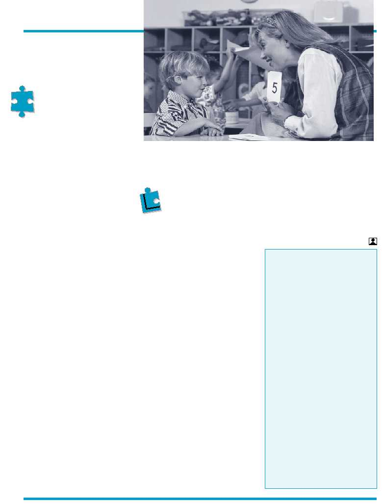

4
UPCOMING PEPSM
WORKSHOPS
• Autism: Theory
and Treatments
• Managing the
Behaviorally
Challenged Child
• Sensory Integration
• Oral Motor
and Feeding Issues
in Early Intervention
Clients
• Language
Development
in Toddlers and
Preschoolers
Look for our PEPSM brochure
in the mail or call Sonia
at 718-339-9700, ext. 228.
Cont’d from page 3
with normal or near-normal intelligence and
those who develop language tend to have
the best outcomes. Many seem to go through
developmental spurts, spontaneously begin-
ning to talk, play with toys, function so-
cially and tolerate change in routine.
RESPONDING TO
THE DISORDER
Applied Behavioral Therapy, pioneered
by Dr. O. Ival Lovass more than 25 years
ago, is a form of intensive, highly repetitive
teaching that breaks learning into tiny in-
cremental tasks, each one reinforced with
positive rewards. Whereas most children
learn from their environments, children with
autism need to be taught even the simplest
things, like responding to their names, mak-
ing and keeping eye contact, and sitting
still. The process is strict, labor-intensive
and excruciatingly time consuming. It can
take days or weeks to learn a task as simple
as pointing and years to learn language.
Sensory Integration is the normal neuro-
logical process of the brain organizing
sensory information, specifically the proprio-
ceptive, vestibular and tactile systems, in or-
der for humans to function optimally in their
environment. The theory, first introduced by A.
Jean Ayers, Ph.D., OTR, recognizes that many
of the vestibular behaviors exhibited by chil-
dren with autism, such as swinging, rocking,
and even biting and hit-
ting, may be chemical
stress relievers that help
them achieve a calmer
neurological state and
that deep pressure ac-
tivities tend to enhance
their proprioceptive awareness.
Research also suggests that the vestibu-
lar system may be directly linked to the lan-
guage system. Since language is a social tool,
failure of the vestibular system may prevent a
person with autism from learning language.
Autistic children may be hypersensitive
to light and sound, or may be tactile defen-
sive – hypersensitive to being touched or
having people in their space. Practitioners
frequently modify behavior and environment
in order to maximize the potential of people
with autism. However, there isn’t one an-
swer to address the wide spectrum of symp-
toms. Often the therapist must make
modifications on a case-by-case basis. A
recent survey indicates that occupational
therapists who work primarily in school sys-
tems most often use sensory integration
approaches with the children they treat.
REPORTED
BREAKTHOUGH
On January 15,
2003, CBS 60 Minutes II
ran a short program on a new research foun-
dation called Cure Autism Now, CAN. Estab-
lished by Jon Shestak and his wife Portia
Iversen, who have an autistic son, Dov, CAN
is presently the largest private supporter of
autism research in the country, funding sev-
eral hundred scientists working on the genes
responsible for the disorder. The program
focused on their most recent breakthrough.
One of their students, Tito Mukhopadhayay,
is a 14 year old boy who,
like Dov, suffers from
the most severe form of
autism. Tito is almost
mute and has little con-
trol over his body. How-
ever, unlike Dov and
other autistic children, he can write elo-
quently and independently. His teacher and
“miracle worker” is his mother, Soma. For
the past 11 years, she has been talking, teach-
ing, prodding and stimulating, keeping Tito’s
mind on track. She has taught him literature,
geometry and music. She tied a pencil to his
finger with a rubber band and taught him to
write. Her “Rapid Prompting Method” ap-
proach, which she recently started imple-
menting at CAN, keeps the children‘s
attention focused long enough for them to
communicate. She ignores their erratic move-
ment and wandering eyes and focuses rather
on the mind locked inside.
Dov’s parents were astonished at their
son’s progress. “From a boy who six weeks
earlier couldn’t even tie his shoe suddenly
came full sentences, complex thoughts and
words spelled correctly. ‘The best way I could
put this is it seemed like I was seeing the kid
that had disappeared seven years before.’”
Dov says that all those years, when people
thought he was lost in his own world, he was
actually listening to everything around him.
He says he is much happier now because
now “I can tell others my feelings.”
Children with autism need
to be taught even the
simplest things, like
responding to their names…